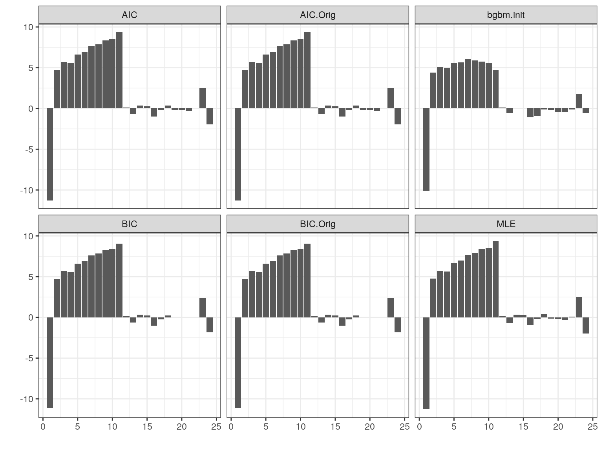

In step II, we use the petler.fit function to fit penalized proportional odds (PO) models to the labeled time-to-event data with features derived in step I. When fitting the penalized PO models, the non-parametric baseline function is approximated using B-splines.
library(PETLER)
## Loading required package: survivalobj <- readRDS("step1.rds")
system.time(fit <- petler.fit(obj)) ## user system elapsed ## 292.297 0.338 292.641
The output from the petler.fit function is a list with components:
details of the fitted model
C-statistics and adjusted Brier scores of the derived algorithm
A vector of consecutive integers describing the grouping coefficients

fit## $bgbbest_FromChengInit_BFGS
## bgbm.init AIC BIC AIC.Orig BIC.Orig
## [1,] -10.11292125 -11.29421616 -11.29424511 -11.1465929 -11.29424511 -11.1465929
## [2,] 4.40187940 4.74380297 4.74381071 4.7169819 4.74381071 4.7169819
## [3,] 5.06221549 5.69189808 5.69190962 5.6546557 5.69190962 5.6546557
## [4,] 4.94319464 5.62210153 5.62209852 5.5584114 5.62209852 5.5584114
## [5,] 5.57160934 6.64214133 6.64215098 6.5833762 6.64215098 6.5833762
## [6,] 5.64333256 6.97343410 6.97343503 6.9105376 6.97343503 6.9105376
## [7,] 6.02185859 7.63875891 7.63873810 7.6230332 7.63873810 7.6230332
## [8,] 5.88147860 7.87473657 7.87474870 7.8309643 7.87474870 7.8309643
## [9,] 5.76978005 8.37413932 8.37413289 8.2730655 8.37413289 8.2730655
## [10,] 5.62534094 8.52269490 8.52270229 8.4057302 8.52270229 8.4057302
## [11,] 4.72880677 9.34363403 9.34364279 9.0717619 9.34364279 9.0717619
## [12,] 0.11081080 0.12599476 0.12600962 0.1341242 0.12600962 0.1341242
## [13,] -0.55613083 -0.65376379 -0.65376914 -0.6467310 -0.65376914 -0.6467310
## [14,] 0.02739589 0.33837376 0.33836215 0.3106244 0.33836215 0.3106244
## [15,] 0.04608918 0.26586583 0.26586970 0.2410206 0.26586970 0.2410206
## [16,] -1.10655467 -0.98364965 -0.98360813 -1.0329246 -0.98360813 -1.0329246
## [17,] -0.90230236 -0.19576701 -0.19578055 -0.2579808 -0.19578055 -0.2579808
## [18,] -0.13030298 0.38146691 0.38147196 0.2473039 0.38147196 0.2473039
## [19,] -0.18317666 -0.15377130 -0.15377995 0.0000000 -0.15377995 0.0000000
## [20,] -0.39886398 -0.20976962 -0.20976731 0.0000000 -0.20976731 0.0000000
## [21,] -0.46081303 -0.31984955 -0.31985741 0.0000000 -0.31985741 0.0000000
## [22,] -0.09936041 0.07723746 0.07722058 0.0000000 0.07722058 0.0000000
## [23,] 1.78698309 2.50314778 2.50314559 2.3493907 2.50314559 2.3493907
## [24,] -0.55040020 -1.95699624 -1.95701173 -1.8245941 -1.95701173 -1.8245941
##
## $Cstat_BrierSc_ChengInit_BFGS
## Init MLE AIC BIC AIC.Orig BIC.Orig Cheng NPMLE
## Cstat 0.8387743 0.8675390 0.8674464 0.8703733 0.8674464 0.8703733 0.8387743 0.8689018
## BrierSc.Adj 0.2075551 0.4343489 0.4343445 0.4352410 0.4343445 0.4352410 0.2067849 0.4103446
## TreeTN TreeAll logi
## Cstat 0.83767932 0.82742894 0.8467357
## BrierSc.Adj 0.07349286 -0.07098773 0.1675775
##
## $group
## [1] 1 2 3 4 4 4 4 5 5 5 5 6 6